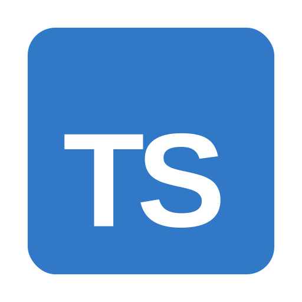
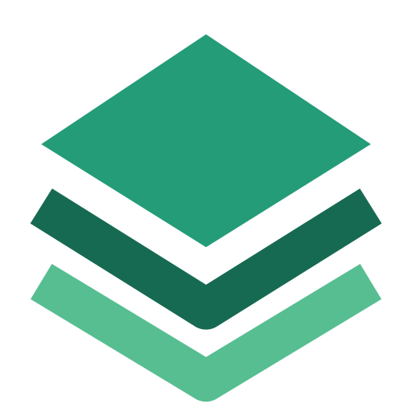

Aplicación web
Consulta rutas, revisa sus condiciones y conoce los espacios recomendados de la ciudad.
Conocer funcionesTU CIUDAD. TU RITMO. TU SIGUIENTE META.
Descubre rutas y horarios con información de seguridad para correr por Loja con mayor confianza.
LA IDEA DETRÁS DE RUNCTY
RUNCTY es un prototipo para corredores y para el Club Deportivo Gacelas Running Team. Ayuda a planificar entrenamientos con información de rutas, horarios y condiciones de seguridad.
Leer sobre el proyectoUN MISMO PROYECTO. DOS EXPERIENCIAS.
Una propuesta para explorar rutas desde la web y acompañar cada entrenamiento desde el móvil.
Consulta rutas, revisa sus condiciones y conoce los espacios recomendados de la ciudad.
Conocer funcionesPlanifica tus salidas y registra tus recorridos, distancias, tiempos y ritmo con GPS.
Conocer funcionesDISEÑADO PARA CORREDORES
Funciones contempladas en la propuesta de RUNCTY para mejorar la planificación y el acceso a información útil.
Explora recorridos y espacios recomendados según el horario de entrenamiento.
Consulta un índice referencial y conoce las condiciones de los tramos.
Comparte propuestas de recorridos e incidentes sujetos a revisión por el club.
DOCUMENTACIÓN DEL PROYECTO
Consulta las especificaciones del prototipo, organizadas para facilitar su revisión.
LAS HERRAMIENTAS DEL PROYECTO
Lenguajes, herramientas, mapas y servicios propuestos para desarrollar RUNCTY.
Ver las 19 tecnologías


PRIMER PROTOTIPO · FIGMA
Explora la propuesta de RUNCTY para web y móvil desde su prototipo.
Abrir prototipo en Figma